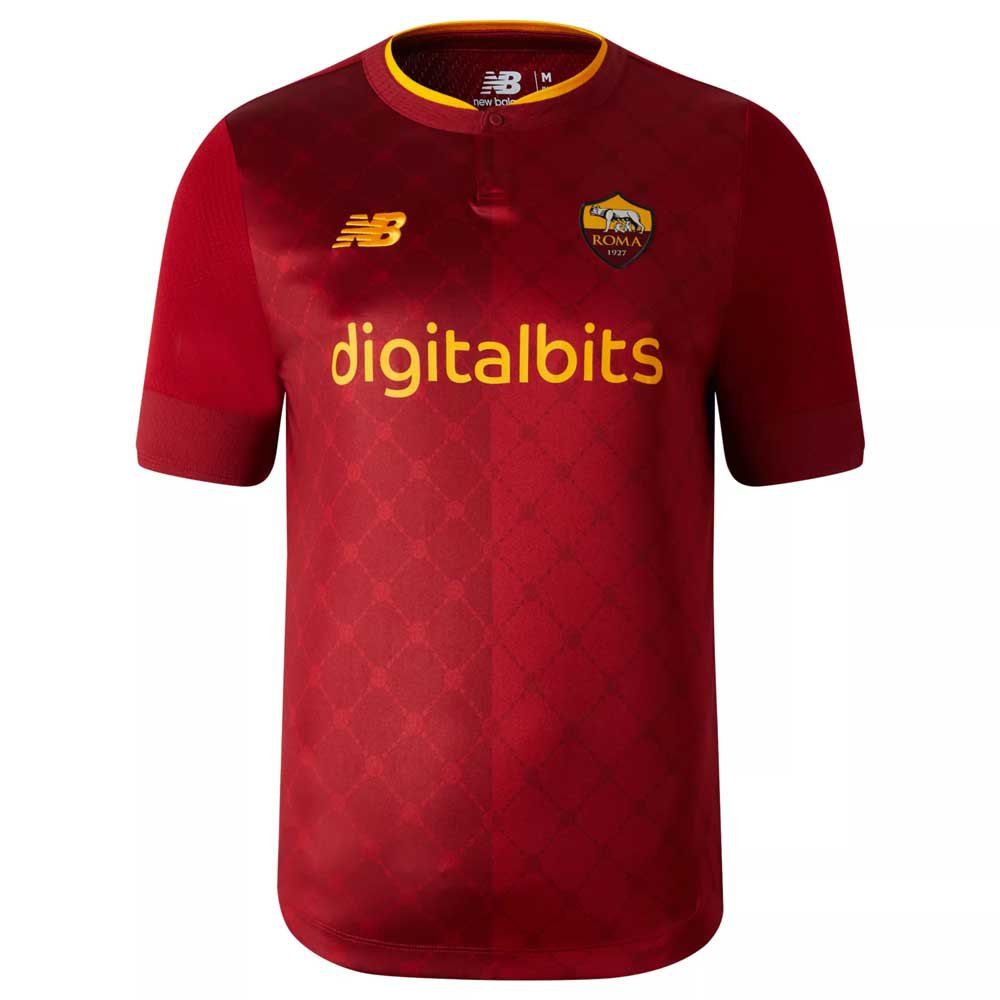
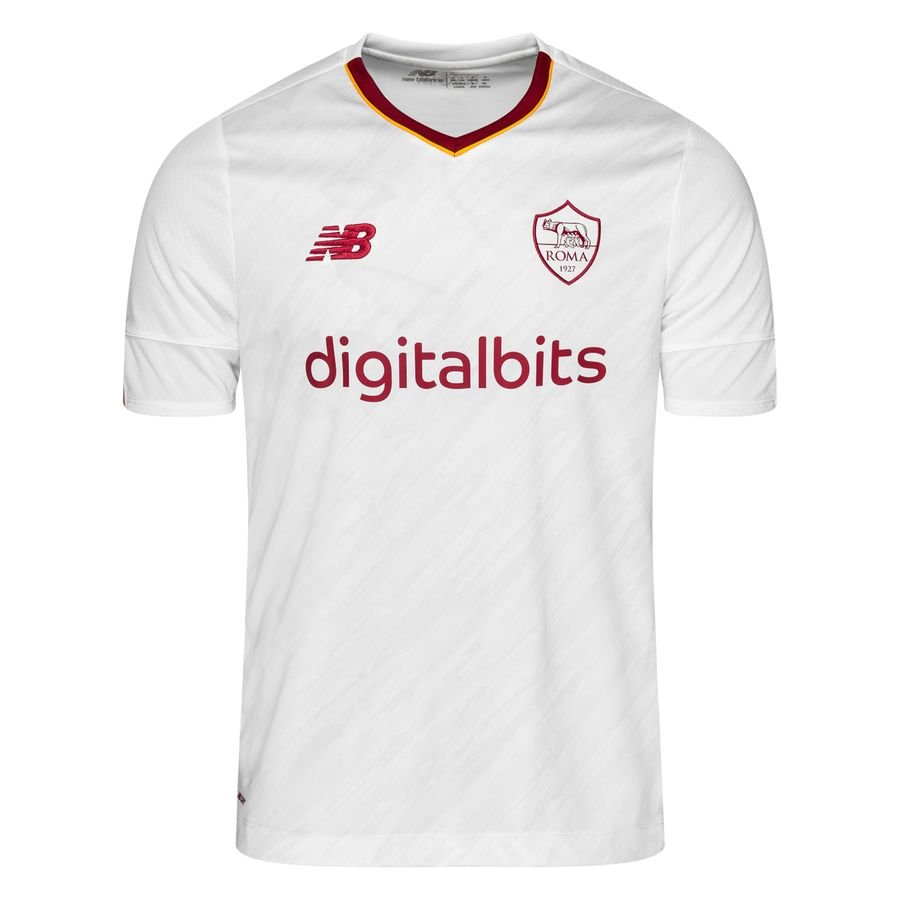
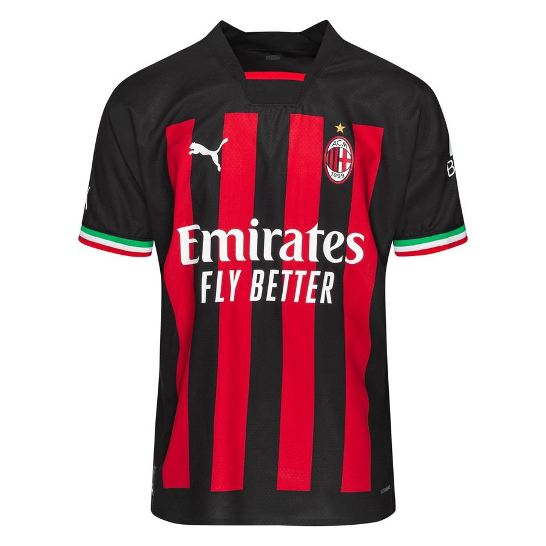
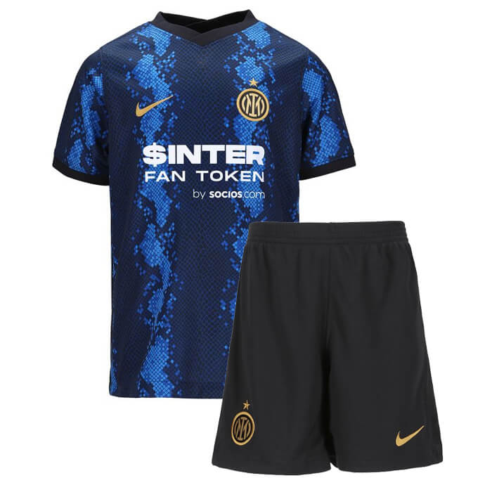

Le Championnat d'Italie de football, dénommé Serie A, ou Serie A italienne, ou encore Serie A TIM pour des raisons de sponsoring avec TIM, est une compétition de football qui représente en Italie le sommet de la hiérarchie du football. La seconde division italienne est la Serie B.
Forza Roma. En exclusivité les maillots du club le plus fort au monde. L'Associazione Sportiva Roma, littéralement Association sportive Rome, abrégée en AS Roma, couramment appelée Roma en italien et AS Rome en français, est un club de football italien fondé le 22 juillet 1927 et situé à Rome. Le club possède également une section féminine évoluant en Serie A.
 Les maillots des derniers champions d'Italie.L'Associazione Calcio Milan, connu sous le nom d'AC Milan, est un club de football italien fondé le 16 décembre 1899 sous le nom initial de Milan Foot-Ball and Cricket Club. L'équipe première, qui évolue en Serie A, est entraînée par Stefano Pioli. Le club possède également une section féminine évoluant en Série A.
Le club principal de la ville de Milan. Le Football Club Internazionale Milano, couramment appelée Inter ou en français Inter Milan, est un club de football professionnel italien fondé le 9 mars 1908 et basé dans la ville de Milan, dans la région de Lombardie, dans le nord de l'Italie. Le club possède également une section féminine évoluant en Serie A.
